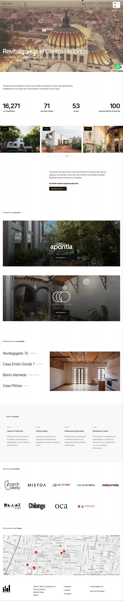
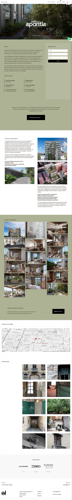
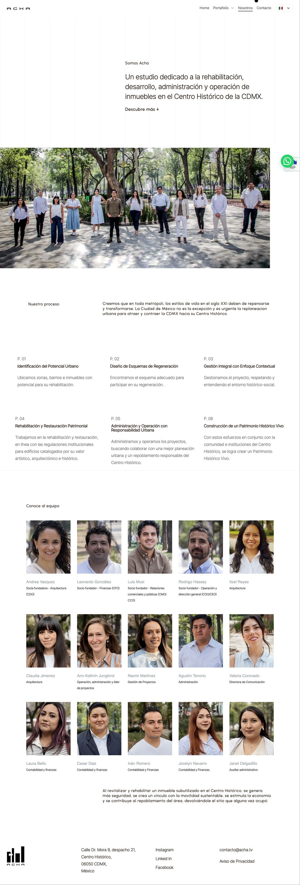

"Con ACHA hacemos de todo: imagen de marca en digital, marketing de performance y adquisición de leads para sus desarrollos activos."
ACHA es una firma de arquitectura y desarrollo inmobiliario enfocada en la rehabilitación de inmuebles históricos en el centro de CDMX. Su propuesta — Arquitectura + Rehabilitación + Sustentabilidad + Conservación — es única en su mercado. CoreLab lleva su imagen digital completa y opera su estrategia de medios y adquisición de leads de forma continua.
La rehabilitación de patrimonio arquitectónico es un nicho poco comunicado en el mercado inmobiliario mexicano. Los compradores potenciales — perfil lifestyle, conciencia ambiental, apreciación por lo histórico — no están buscando "departamentos en el centro" sino algo mucho más específico: vivir en un edificio con historia, restaurado con criterio.
ACHA necesitaba una identidad digital que tradujera su filosofía en una experiencia de usuario coherente, y una estrategia de medios que encontrara a ese comprador específico en el ecosistema digital — con presupuestos eficientes y métricas claras.
Construimos la identidad digital de ACHA desde los cimientos: estrategia de contenido que muestra el antes y después de cada rehabilitación, UI/UX del sitio bilingüe con sliders de transformación, y optimización SEO orientada a perfiles de comprador calificado. El trabajo de imagen incluye la presencia en medios especializados como ArchDaily.
En paralelo, operamos la estrategia de medios pagados para los desarrollos activos — actualmente Edificio Apantla y Casa González Obregón — con campañas en Google Ads y Meta Ads, segmentación por intereses arquitectónicos y lifestyle, landing pages de alta conversión y optimización mensual de resultados. El ciclo de venta en este segmento es largo; nuestra labor es mantener el pipeline activo y calificado.
Pasa el cursor sobre cada pantalla para recorrerla.


